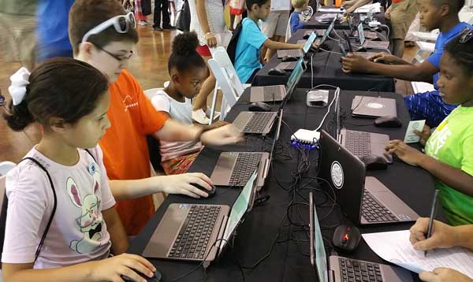
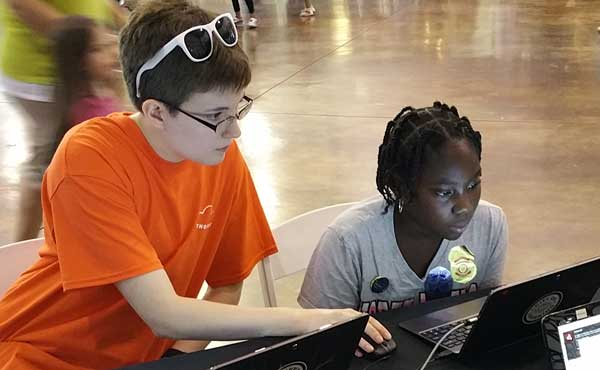
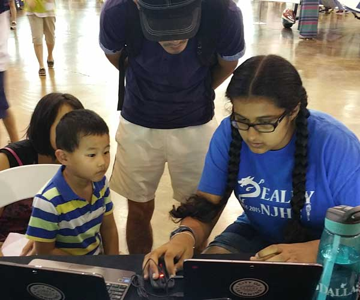
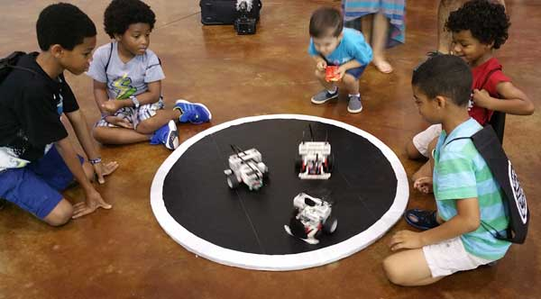
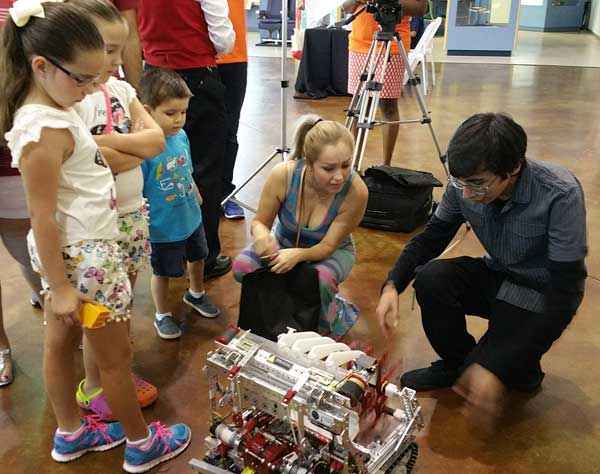
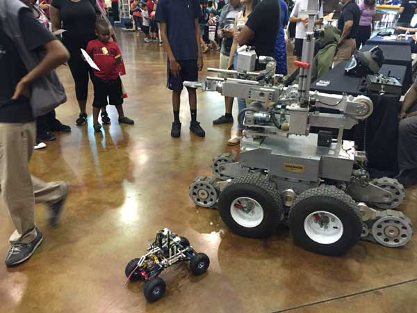
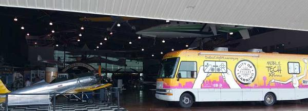
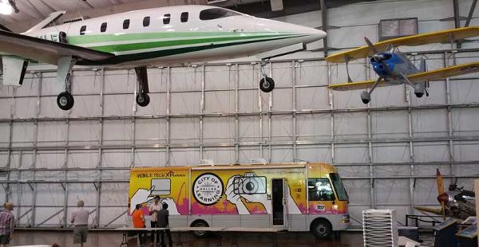

The Dallas City of Learning Organization held a Turn Up event at the Frontiers of Flight Museum, where we staffed the Mobile XPerience (MXP) complete with laptops, 3D printers, and LEGO SumoBots. Outside the vehicle, Caitlin and I taught kids how to create 3D models of houses using SketchUp. Then we let the kids bring their designs to life by designing and 3D-Printing keychains.
   On board Max managed the bank of four 3D printers while Tycho and Austin taught kids to build virtual structures on our Minecraft server with the education version of the software.Out to the side of the MXP, we set up a ring for the sumo lego robots to battle in, teaching the kids how robots can be programmed to react to the world around them. Jayesh, Omar and Darshan manned that station and also demonstrated our FTC competition robot.
 Omar ran minion (our robot walking companion) around the museum Pied-Piper fashion, leading kids back to our activity stations in and around the vehicle. On the way he taught kids to operate the robot with its touch and rotation sensor based leash. At one point he took minion over to challenge the airport's 700lb bomb disposal robot. That robot was not impressed.
A few more pics of the MXP in the museum while we are striking the exhibit:
 Person-hours note: The night before Max and Tycho spent 5 hours getting the vehicle ready.